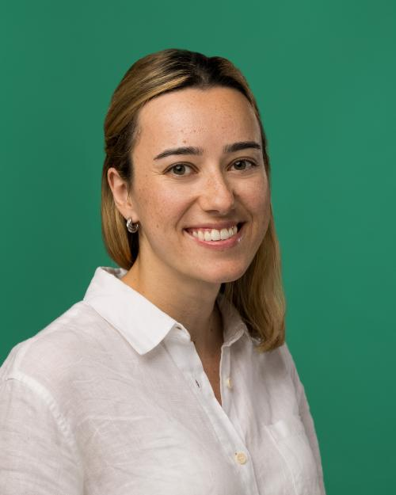
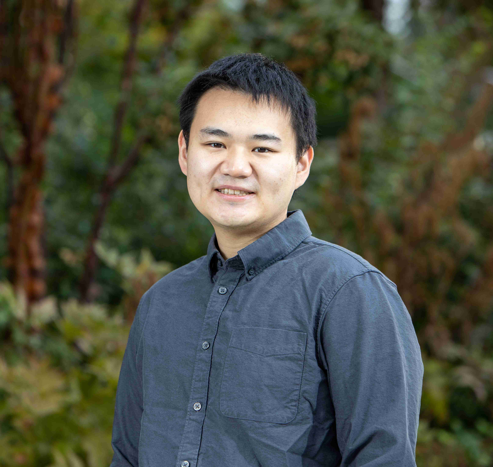
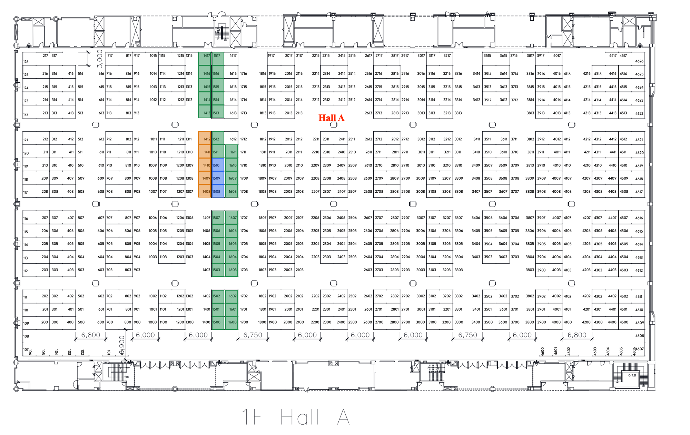

News
- July 10, 2026 Attending virtually? Watch the video on the ICML virtual site. Feel free to paste your questions into the Q&A chat, and we’ll do our best to get them answered.
- July 3, 2026 Workshop resume book: optionally share your CV with our sponsors for research, internship, collaboration, or career opportunities through this form — see the Attend section for details.
- July 3, 2026 Prophet Markets is live: trade the future of forecasting at forecastingmarkets.org — everyone starts with $50 in virtual money, and top forecasters win prizes — see the Attend section for details. Attend our workshop and fill out the attendance form here to get an additional $50 for trading.
- June 28, 2026 Poster session details posted: the poster session runs during lunch (12:15–13:30) in Hall A (1F). Find your board zone on the hall map — spotlights on 1408–1412, orals on 1508–1510, and posters on the remaining boards. Put your poster up anywhere within your section; tape will be provided at the workshop.
- May 20, 2026 Decisions are out: notifications have been sent to all authors. Congratulations to the authors of accepted papers — check out the full list in the Accepted Papers section below.
Invited Speakers
Distinguished researchers from academia and industry will share their perspectives on AI forecasting.


Scott Jeen
Mantic
Scott Jeen is a Member of Technical Staff at Mantic, an AI forecasting startup whose systems ranked 4th out of 539 humans in the Metaculus Cup. He holds a PhD in reinforcement learning from the University of Cambridge; his current research focuses on training LLMs to predict world events.

Simon S. Du
Apodex / University of Washington
Simon S. Du is an Associate Professor at the Paul G. Allen School at the University of Washington and Chief Scientist for Reasoning Models at Apodex. His research spans reinforcement learning, non-convex optimization, and test-time compute, recognized by a Sloan Research Fellowship, NSF CAREER Award, and IEEE AI's 10 to Watch (2024).
Atlas Wang
XTX Markets / UT Austin
Zhangyang "Atlas" Wang is a tenured Associate Professor at UT Austin (currently on leave as Research Director at XTX Markets), holding the Temple Foundation Endowed Faculty Fellowship in ECE. His research establishes theoretical and algorithmic foundations of generative and neurosymbolic AI, recognized by an NSF CAREER Award, ARO Young Investigator Award, and IEEE AI's 10 to Watch.
Seth Blumberg
Seth Blumberg is a behavioral economist at Google, where he leads the company's internal prediction market platform. His work focuses on forecasting, market design, and the application of AI systems to forecasting; he holds a PhD in Economics from the University of Chicago and a BA in Mathematics from Princeton.
Workshop Schedule (Tentative)
All times are in local Seoul time (KST).
| Time | Event |
|---|---|
| 08:05 – 08:10 | Opening Remarks |
| 08:10 – 08:55 | Invited Talk by Philip E. Tetlock (University of Pennsylvania) |
| 08:55 – 09:40 | Invited Talk by Nicole Kagan (Kalshi) |
| 09:40 – 10:00 |
|
| 10:00 – 10:10 | Hackathon Winner Presentation |
| 10:10 – 10:30 | Break / Meet-and-Greet |
| 10:30 – 10:45 | Industry Session |
| 10:45 – 11:30 | Invited Talk by Simon Du (Apodex / University of Washington) |
| 11:30 – 12:15 | Invited Talk by Atlas Wang (XTX Markets / UT Austin) |
| 12:15 – 13:30 | Lunch / Poster Session |
| 13:30 – 14:15 | Invited Talk by Scott Jeen (Mantic) |
| 14:15 – 15:00 | Invited Talk by Seth Blumberg (Google) |
| 15:00 – 15:20 | Break / Meet-and-Greet |
| 15:20 – 15:50 |
|
| 15:50 – 16:00 | Industry Session + Award Announcement |
| 16:00 – 16:50 | Panel Discussion |
| 16:50 – 17:00 | Closing Remarks |
Attend
Everyone is welcome! Register and share your resume with our sponsors, make some forecasts on Prophet Markets!
Registration
Our workshop is part of ICML 2026, so attendance is handled through the main conference. Register on the ICML 2026 registration page — you can pick up a full-conference pass or a workshop-only pass, whichever fits your plans. We hope to see you in Seoul on July 11.
Together with our sponsors, we're also putting together an optional resume book. If you're open to research, internship, collaboration, or career opportunities, you're welcome to share your CV with the participating sponsors. Submitting is entirely voluntary through this form.
Mini Prediction Market
We built a mini prediction market — Prophet Markets — a fun, no-stakes way to get hands-on with prediction markets. Trade on real workshop questions with $50 in virtual money to start, bring your AI and forecasting expertise to bear on sharper predictions, and climb the leaderboard as you go.
To boost engagement, the top three forecasters win prizes:
- 1st place — one month of Claude/ChatGPT Max (20×), plus a second month at Max (5×).
- 2nd place — one month of Claude/ChatGPT Max (20×).
- 3rd place — one month of Claude/ChatGPT Max (5×).
Prizes are subject to terms and conditions — including but not limited to a minimum number of participants, a minimum number of trades, and similar requirements — as determined by the workshop organizers.
Poster Session
The poster session runs during lunch, 12:15–13:30, in Hall A (1F). Our boards are highlighted on the hall map below: spotlights on 1408–1412, orals on 1508–1510, and posters on the remaining boards (1413–1417, 1500–1517, 1600–1611). Put your poster up anywhere within your section — tape will be provided at the workshop.
Oral presenters: a poster is optional but recommended — it's a great way to share your work with attendees who can't make the talk or who have follow-up questions.
